FR-175 · release 2 · picture sheet
The ranking place on the entry list
Main against this branch, pixel for pixel. Every state that must not change is identical to main (32 of 32, 0 pixels). The new look shows only with the box ticked and weapon, category and gender all chosen. The event form gains one box and one hint line; nothing else in it moves except by that height.
01 · What you decide
Two sign-offs before the push
- This sheet. The new look (section 03 and 04) and the proof that nothing else changed (02).
- The ADR-079 amendment of 2026-11-22 (FR-175), written as a draft: the per-event switch, the three-filter rule, „#”, the seed order, what a visitor may read. It turns Accepted on your word.
Recommendation
Approve both. Nothing here goes beyond the signed plan; the four places where the build differs from the plan's text are listed in section 05, each as a correction the plan's own intent required.
02 · Must not change
Identical to main: 32 of 32
The entry list on the standalone page and in the calendar's modal, desktop (1280) and phone (375), Polish and English. Main and this branch were built for production (vite.config.ce.ts) and photographed by the same script with software drawing; each build twice, and the two runs are identical (48 of 48 images each), so any difference below is the change itself. All data is invented (the 76-entry roster of the 17 Nov sheet); no database is read.
| State | Where | Main vs branch |
|---|---|---|
| No filter; the box ticked | modal · desktop · en | identical · 0 px |
| Épée, V2, men; the box not ticked | modal · desktop · en | identical · 0 px |
| Épée and V2, no gender; the box ticked | modal · desktop · en | identical · 0 px |
| Épée, V0, men at an EVF event; the box ticked (EVF ranks 40 and over) | modal · desktop · en | identical · 0 px |
| No filter; the box ticked | modal · desktop · pl | identical · 0 px |
| Épée, V2, men; the box not ticked | modal · desktop · pl | identical · 0 px |
| Épée and V2, no gender; the box ticked | modal · desktop · pl | identical · 0 px |
| Épée, V0, men at an EVF event; the box ticked (EVF ranks 40 and over) | modal · desktop · pl | identical · 0 px |
| No filter; the box ticked | modal · phone · en | identical · 0 px |
| Épée, V2, men; the box not ticked | modal · phone · en | identical · 0 px |
| Épée and V2, no gender; the box ticked | modal · phone · en | identical · 0 px |
| Épée, V0, men at an EVF event; the box ticked (EVF ranks 40 and over) | modal · phone · en | identical · 0 px |
| No filter; the box ticked | modal · phone · pl | identical · 0 px |
| Épée, V2, men; the box not ticked | modal · phone · pl | identical · 0 px |
| Épée and V2, no gender; the box ticked | modal · phone · pl | identical · 0 px |
| Épée, V0, men at an EVF event; the box ticked (EVF ranks 40 and over) | modal · phone · pl | identical · 0 px |
| No filter; the box ticked | standalone · desktop · en | identical · 0 px |
| Épée, V2, men; the box not ticked | standalone · desktop · en | identical · 0 px |
| Épée and V2, no gender; the box ticked | standalone · desktop · en | identical · 0 px |
| Épée, V0, men at an EVF event; the box ticked (EVF ranks 40 and over) | standalone · desktop · en | identical · 0 px |
| No filter; the box ticked | standalone · desktop · pl | identical · 0 px |
| Épée, V2, men; the box not ticked | standalone · desktop · pl | identical · 0 px |
| Épée and V2, no gender; the box ticked | standalone · desktop · pl | identical · 0 px |
| Épée, V0, men at an EVF event; the box ticked (EVF ranks 40 and over) | standalone · desktop · pl | identical · 0 px |
| No filter; the box ticked | standalone · phone · en | identical · 0 px |
| Épée, V2, men; the box not ticked | standalone · phone · en | identical · 0 px |
| Épée and V2, no gender; the box ticked | standalone · phone · en | identical · 0 px |
| Épée, V0, men at an EVF event; the box ticked (EVF ranks 40 and over) | standalone · phone · en | identical · 0 px |
| No filter; the box ticked | standalone · phone · pl | identical · 0 px |
| Épée, V2, men; the box not ticked | standalone · phone · pl | identical · 0 px |
| Épée and V2, no gender; the box ticked | standalone · phone · pl | identical · 0 px |
| Épée, V0, men at an EVF event; the box ticked (EVF ranks 40 and over) | standalone · phone · pl | identical · 0 px |
The standalone page in Polish, one copy each (main and branch are the same pixels):
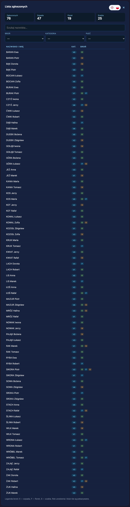


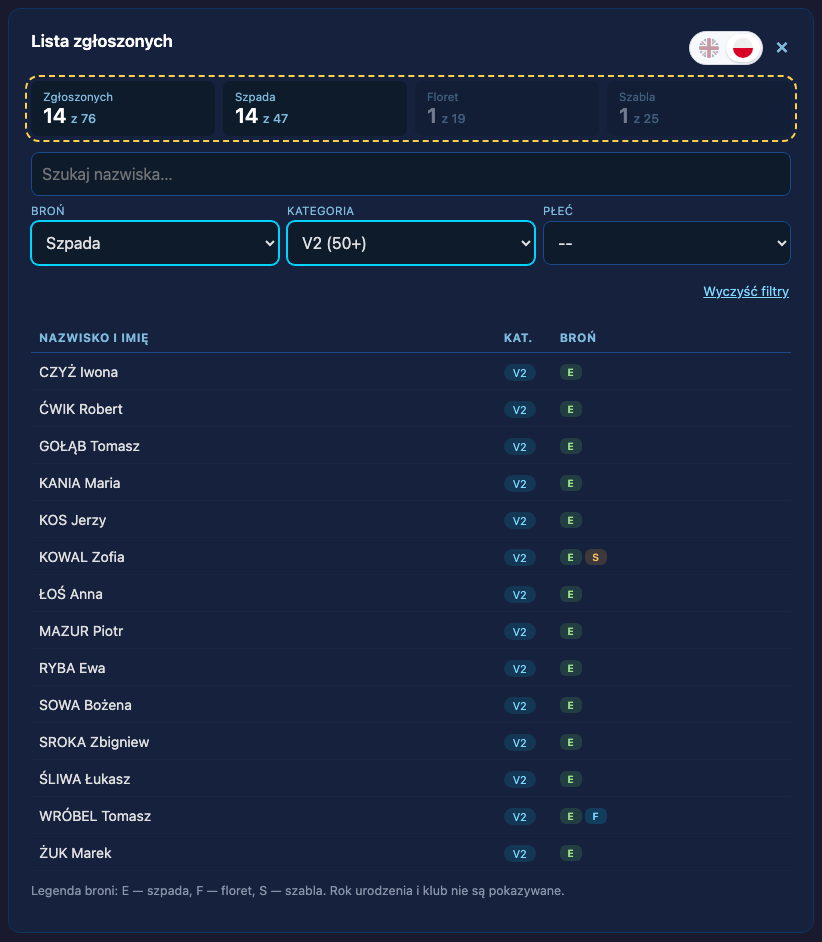
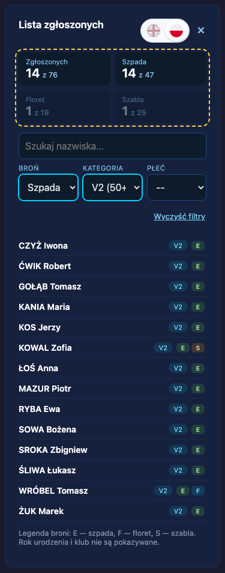
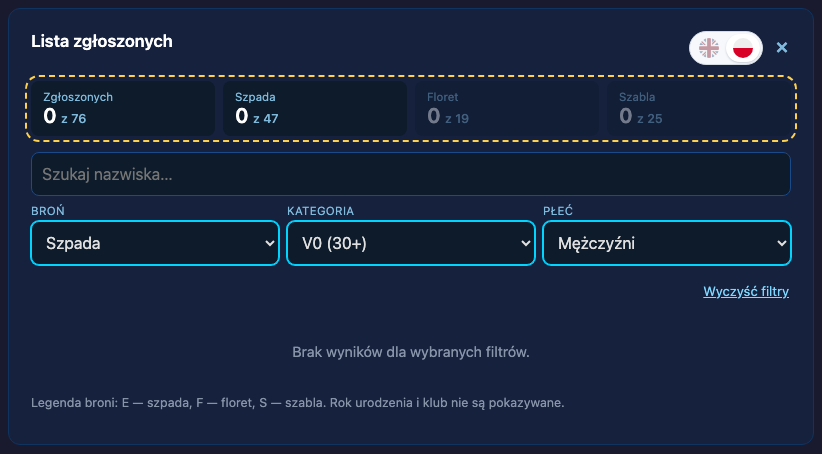
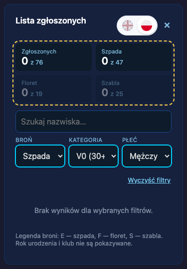
03 · The new look
„#” first, the list in seed order, a line naming the ranking
With the box ticked and épée, V2 and men chosen. Places follow the seed order; the 2nd and 3rd fencers share 2nd place; every fourth fencer has no place and stands after the ranked ones, alphabetically, with a dash. For an EVF event the line under the list names the EVF ranking and the date it was read; for an event of ours, our ranking. The tiles count the same rows as before.
| State | Where | Main vs branch |
|---|---|---|
| Épée, V2, men at an EVF event; the box ticked | modal · desktop · en | new look · +27 px tall |
| Épée, V2, men at an event of ours; the box ticked | modal · desktop · en | new look · +27 px tall |
| Épée, V2, men at an EVF event; the box ticked | modal · desktop · pl | new look · +27 px tall |
| Épée, V2, men at an event of ours; the box ticked | modal · desktop · pl | new look · +27 px tall |
| Épée, V2, men at an EVF event; the box ticked | modal · phone · en | new look · +0 px tall |
| Épée, V2, men at an event of ours; the box ticked | modal · phone · en | new look · +0 px tall |
| Épée, V2, men at an EVF event; the box ticked | modal · phone · pl | new look · +0 px tall |
| Épée, V2, men at an event of ours; the box ticked | modal · phone · pl | new look · +0 px tall |
| Épée, V2, men at an EVF event; the box ticked | standalone · desktop · en | new look · +27 px tall |
| Épée, V2, men at an event of ours; the box ticked | standalone · desktop · en | new look · +27 px tall |
| Épée, V2, men at an EVF event; the box ticked | standalone · desktop · pl | new look · +27 px tall |
| Épée, V2, men at an event of ours; the box ticked | standalone · desktop · pl | new look · +27 px tall |
| Épée, V2, men at an EVF event; the box ticked | standalone · phone · en | new look · +42 px tall |
| Épée, V2, men at an event of ours; the box ticked | standalone · phone · en | new look · +42 px tall |
| Épée, V2, men at an EVF event; the box ticked | standalone · phone · pl | new look · +42 px tall |
| Épée, V2, men at an event of ours; the box ticked | standalone · phone · pl | new look · +42 px tall |
Épée, V2, men at an EVF event; the box ticked · desktop · pl
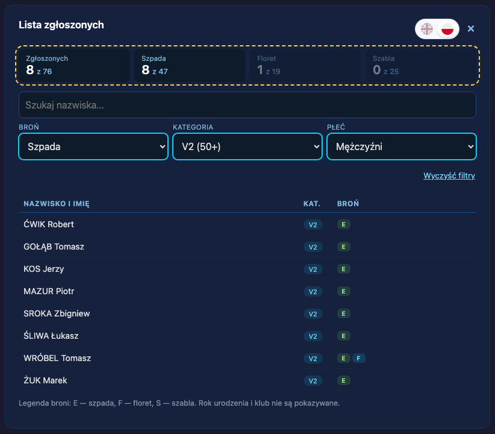
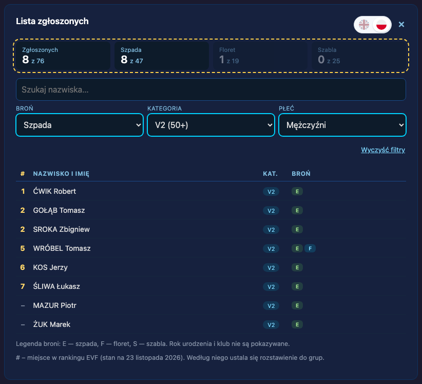
Épée, V2, men at an EVF event; the box ticked · desktop · en

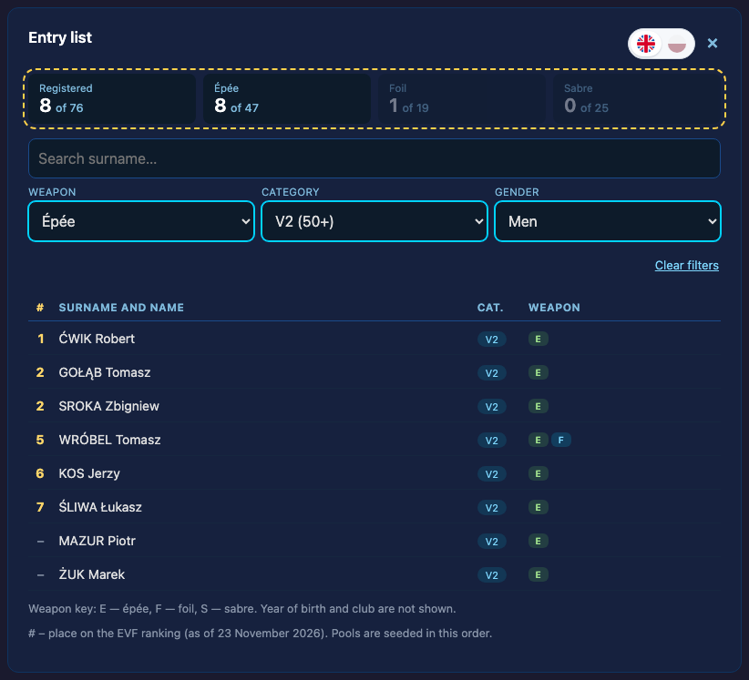
Épée, V2, men at an EVF event; the box ticked · phone · pl
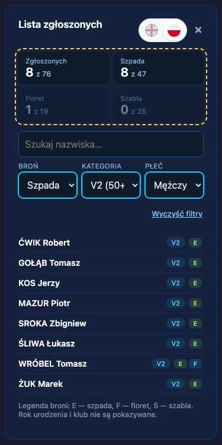
Épée, V2, men at an EVF event; the box ticked · phone · en

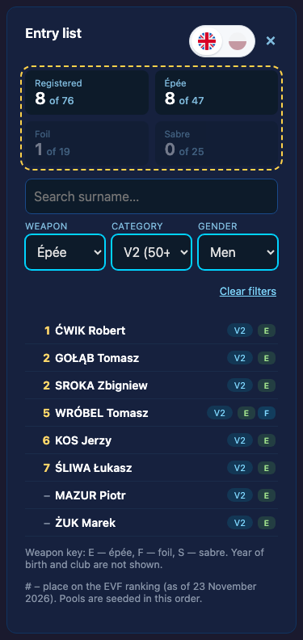
Épée, V2, men at an event of ours; the box ticked · desktop · pl

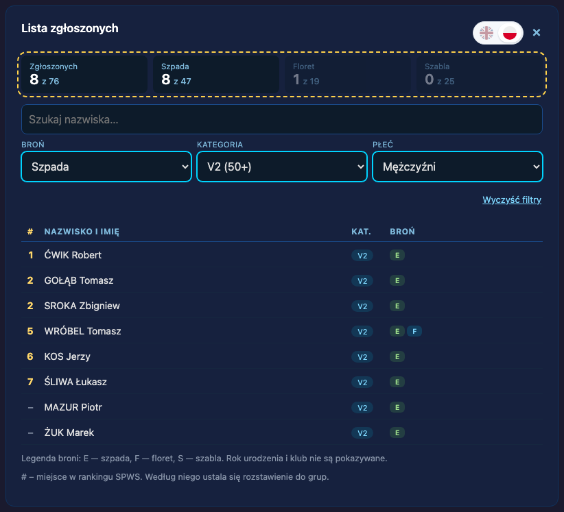
Épée, V2, men at an event of ours; the box ticked · desktop · en
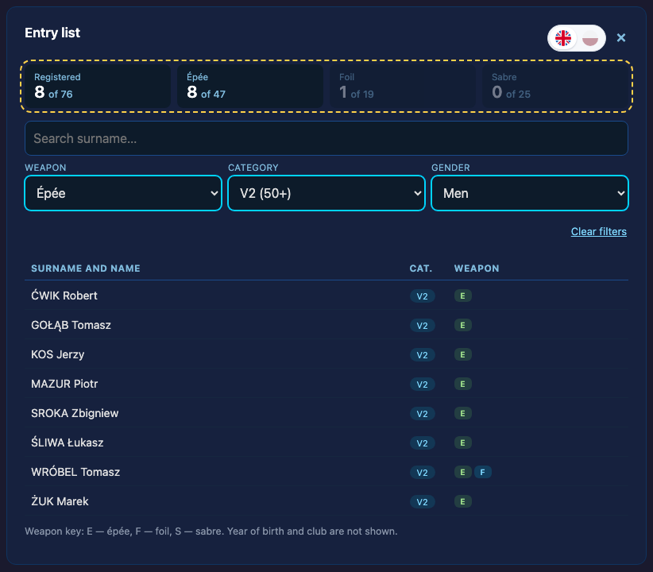
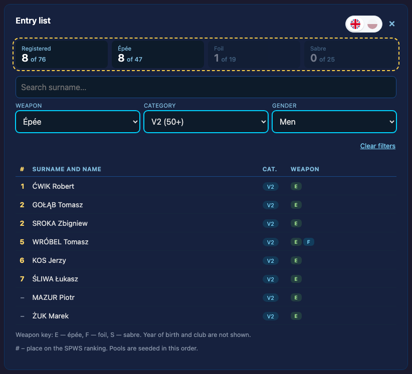
Épée, V2, men at an event of ours; the box ticked · phone · pl

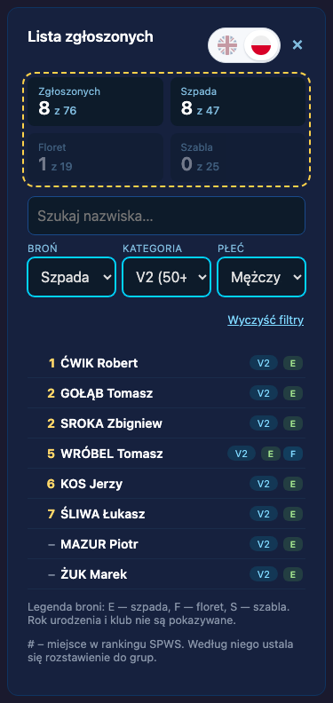
Épée, V2, men at an event of ours; the box ticked · phone · en
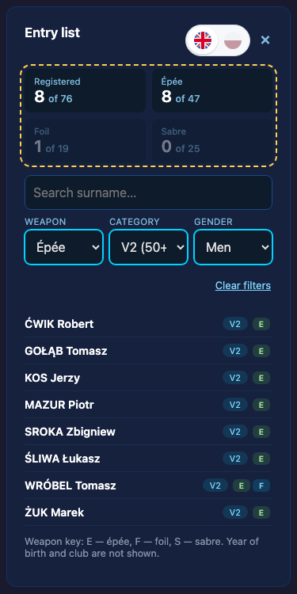
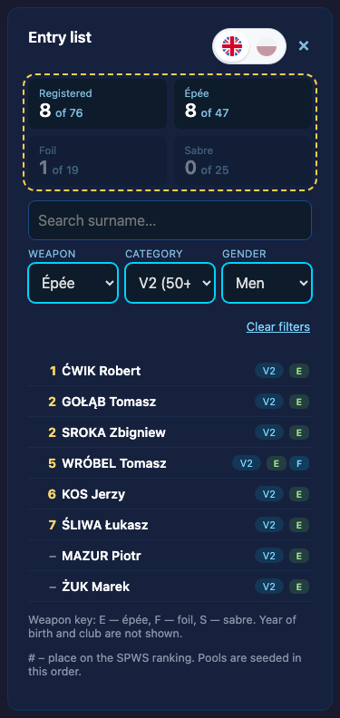
04 · The event form
One box and one hint in „Rejestracja SPWS”
The administrator's form, mounted outside the signed-in application with two invented events and photographed from main and from this branch (each twice, identical: 6 of 6). Each pair is mapped row by row: rows above the new box must be identical in place, every row below identical by exactly the inserted height.
| State | Width | Row map |
|---|---|---|
| Our registration on; the box stored off | desktop | rows 0–259 identical in place; below, identical 63 px lower except 1 row (4 pixels, at most 2/255 in one colour channel: anti-aliasing) |
| Our registration on; the box stored on | desktop | rows 0–259 identical in place; below, identical 63 px lower except 1 row (4 pixels, at most 2/255 in one colour channel: anti-aliasing) |
| Our registration off: the box is disabled | desktop | rows 0–259 identical in place; below, identical 63 px lower except 1 row (2 pixels, at most 3/255 in one colour channel: anti-aliasing) |
| Our registration on; the box stored off | phone | rows 0–833 identical in place; every row below identical 92 px lower |
| Our registration on; the box stored on | phone | rows 0–833 identical in place; every row below identical 92 px lower |
| Our registration off: the box is disabled | phone | rows 0–833 identical in place; every row below identical 92 px lower |
Our registration on; the box stored off · desktop
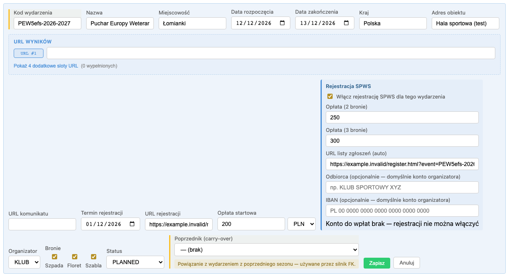

Our registration on; the box stored on · desktop

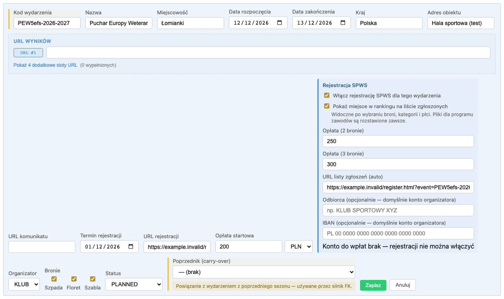
Our registration off: the box is disabled · desktop
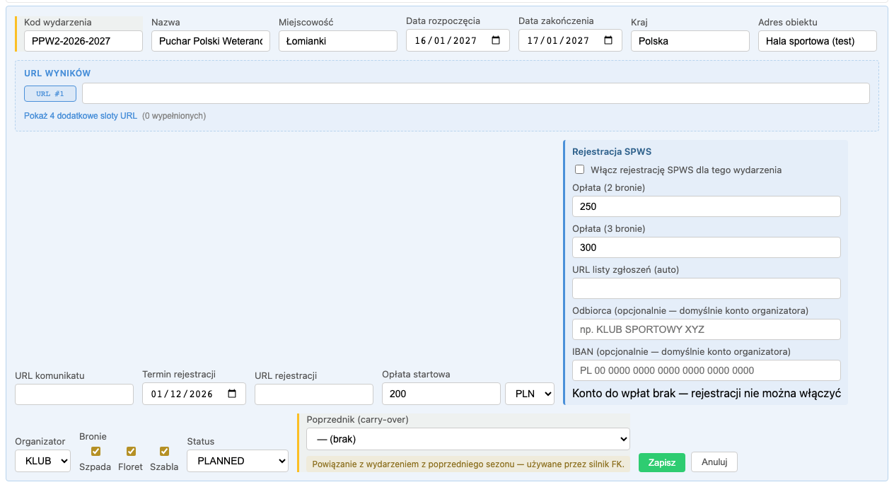

Our registration on; the box stored off · phone


Our registration on; the box stored on · phone
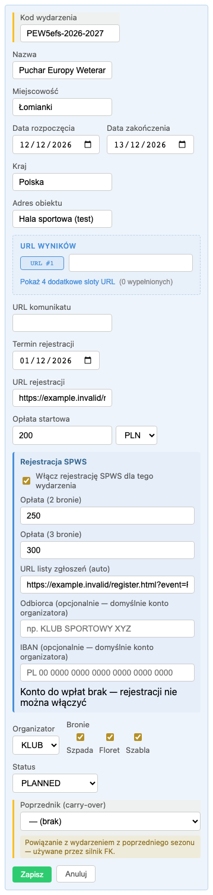
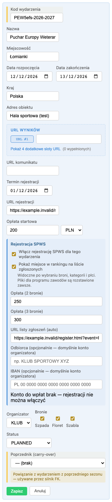
Our registration off: the box is disabled · phone
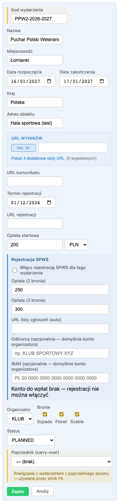
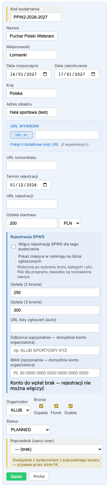
05 · Found while building
Issues, each fixed here
- I31 — the security page was stale.
doc/handbook/reference/security-posture.htmlsaid 33 visitor-callable functions; the allowlist held 37 before this change (FR-167 and FR-173 added four and the page was not updated). It now lists all 38, the four in a row of their own. - I32 — the hint widened the form. The first build let the hint's one long line set the section's width, so on desktop the section no longer fitted beside the other fields and the whole form reflowed. Caught by this sheet; the hint now takes no width of its own (
contain: inline-size) and wraps inside the section, and a whole-pixel line height keeps the rows below on whole pixels. - The plan's save rule, corrected. The plan sent the switch only when the box changed. Unticking our registration without touching the box would then have left the switch on in the database, and switching registration back on later would have shown the places again. The form now compares „registration on and box ticked” with what is stored, and unticking registration also unticks the box (ELRANK.10).
- A new event's form has no box. The plan said a new event starts with the box off; the create form has no „Rejestracja SPWS” section at all (registration is switched on later, in the edit form), so it has no box, reads nothing and sends nothing (ELRANK.10).
- The migration, to the house pattern. The column is added last, as the one statement holding the table lock (as FR-172 and FR-173 do), so the SQL check finds nothing; the function is PL/pgSQL so it can be created before the column. Behaviour as planned (ELRANK.01–06, 22 assertions).
- The mirror test proves it ran. A first version checked only that the switch was untouched, which would also pass if the mirror did nothing; each call now also renames the event and checks the new name arrived.
picture sheet · FR-175 · 22 Nov 2026 · generated by entry-list-ranking-place-sheet/tools/build_sheet.py from capture.cjs and capture_form.cjs · plan doc/plans/seeding-by-organiser-ranking-2026-11-22.html rev 1, release 2